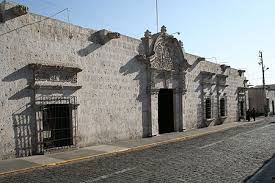
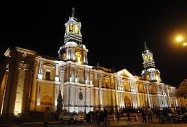
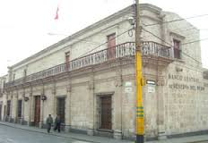

Turismo
Arequipa presenta diversos paisajes y lugares turísticos, desde la costa con sus playas, pasando por el desierto encontramos sus valles fértiles, hasta el altiplano y sus volcanes, nevados y cañones como el Cañón del Colca y el Cañón de Cotahuasi .

La casa del Moral
La casa del Moral es un edificio barroco ubicado en la ciudad de Arequipa, Perú y construida alrededor de 1730. Actualmente es utilizado como galería de exposiciones.

Monasterio de santa catalina
Es el más importante e impresionante monumento religioso del Perú. Fundado en setiembre de 1579 bajo la advocación de Santa Catalina de Siena

La catedral
El conjunto arquitectónico impresiona por sus grandes dimensiones ocupa todo un frente de la plaza de Armas e invita a descubrir su interior ricamente ornamentado con tallas en madera, mármoles de Carrara y una espléndida sillería

Palacio de Goyoneche
El Palacio de Goyeneche es una de las construcciones civiles más conocidas y turísticas de Arequipa. Situada en la confluencia de las Calles de la Merced y del Palacio Viejo, sobre un solar que figuraba en la primitiva traza urbana que, antes de la fundación de Arequipa, aprobó Francisco Pizarro.
